눈 속 수정체는 수분과 단백질로 구성되어 있는데, 이 단백질이 혼탁해지면서 시야가 뿌옇게 보일 수 있습니다. 현재 페이지에서는 원인으로 당뇨병 등 질병, 흡연·음주, 자외선 노출, 유전요인, 외상, 포도막염·녹내장·망막박리 등 안질환, 스테로이드 약물 등을 제시하고 있습니다.
노안과 혼동하기 쉬운 백내장
수정체 조절력 상실은 노안, 수정체 혼탁 질환은 백내장
노안은 수정체의 조절력이 떨어져 가까운 곳에 초점을 맞추기 어려워져 돋보기 안경이 필요합니다. 반면 백내장은 수정체가 노화로 혼탁해져 시야가 안개낀 듯 흐리고 뿌옇게 보이는 질환입니다.
-
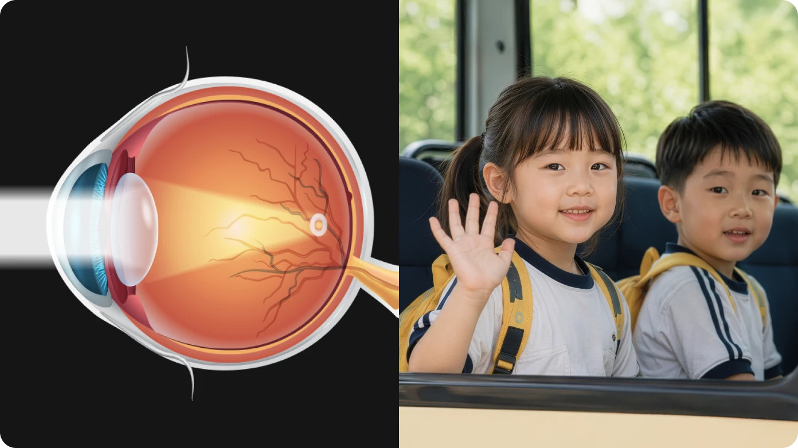
정상안 -
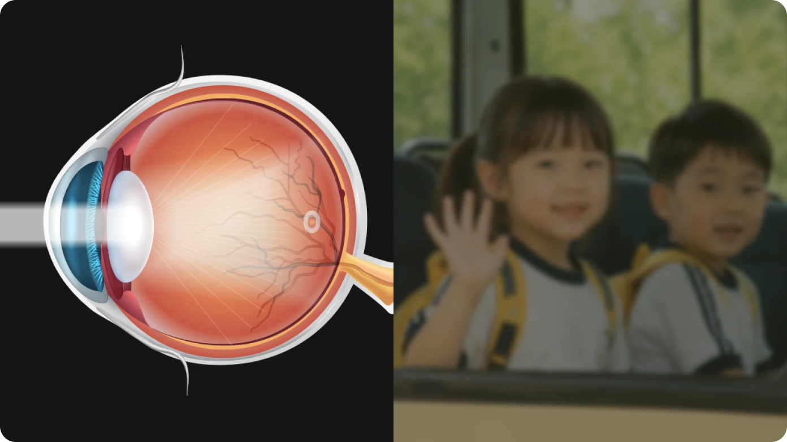
백내장
나는 백내장일까? 자가 체크
다음 문항에서 4개 이상 해당 되거나 최근 시력변화를 느꼈다면 백내장
검사로 정확한 진단과 상담이 필요합니다.
백내장의 원인
Causes of Cataracts
-
노화
수정체 단백질 변화로 혼탁이 진행될 수 있습니다. -
전신질환
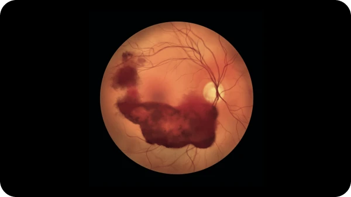
당뇨병 등 전신질환이 백내장 진행과 관련될 수 있습니다. -
생활습관·환경
흡연, 음주, 자외선 노출 등이 영향을 줄 수 있습니다. -
외상·안질환·약물
외상, 포도막염·녹내장 등 안질환, 스테로이드 사용 등이 관련될 수 있습니다.
혼탁 위치에 따라 증상이 달라집니다.
수정체 혼탁의 위치와 정도에 따라 증상은 다르게 나타납니다. 부분적인 혼탁이 있으면 한쪽 눈으로 봐도 사물이 두 개로 겹쳐 보이는 단안복시가 나타날 수 있고, 수정체 중심부가 딱딱해져 굴절률이 증가하면 근거리가 일시적으로 잘 보이는 것처럼 느껴져 노안 개선으로 오인할 수 있습니다.
-
수정체 주변부 혼탁
시력감퇴를 느끼기 어려움
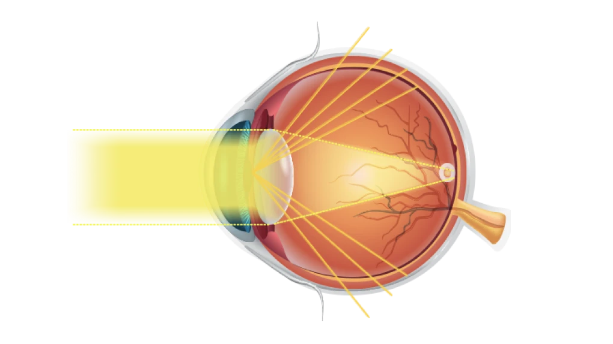
-
수정체 중앙부 혼탁
밝기에 따라 시력 저하 발생
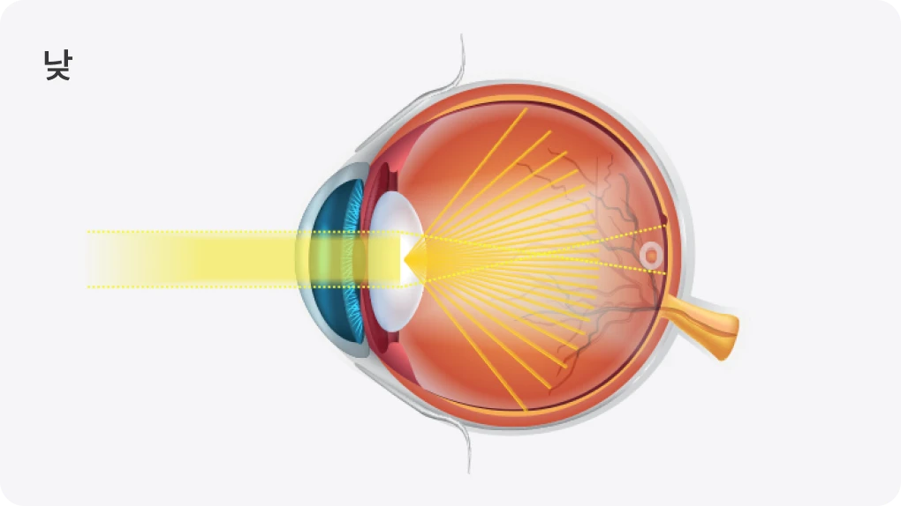
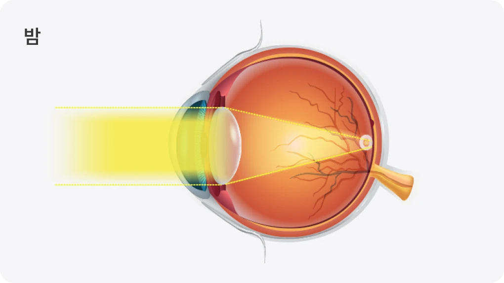
-
수정체 전체 혼탁
밝기에 관계없이 시력 감퇴
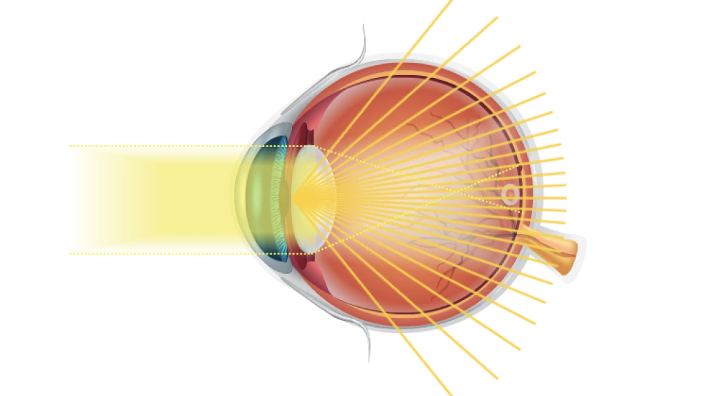
백내장 치료 방법은?
진행 정도와 생활 불편에 따라 수술 시기를 판단합니다.
-
구분수술 방법수술 대상
-
수술적 치료인공수정체(렌즈) 삽입백내장 증상으로 시력저하 및 장애를 겪고 있으며, 약물 치료의 효과를 기대할 수 없을 만큼 질환이 진행된 경우
-
비수술적 치료주사 / 약물
※ 백내장 초기에 진행 속도를 지연시키는 효과 기대
- 초기 백내장은 경과 관찰을 하며 생활 불편 정도를 확인할 수 있습니다.
하지만 수정체 혼탁이 진행되어 시야 흐림, 눈부심, 야간 운전 불편, 일상생활 지장이 커지면 백내장 수술을 고려합니다.
-
Step
정밀검사
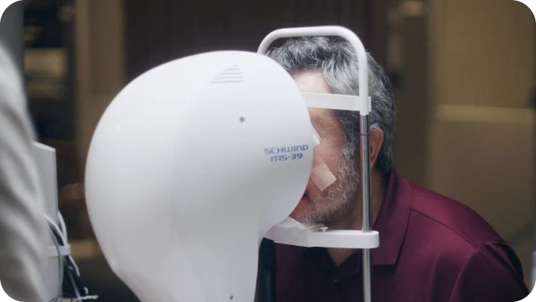
수정체 혼탁 정도, 시력 저하 원인, 망막 상태를 확인합니다. -
Step
수술 시기 상담
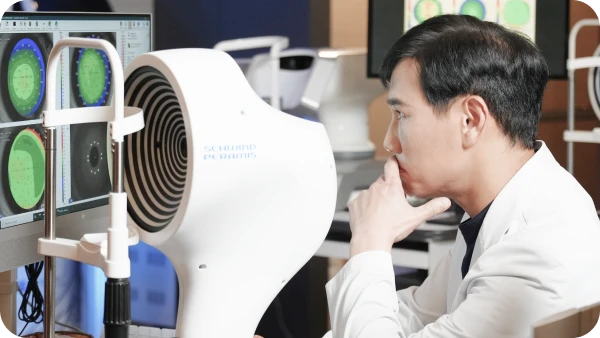
일상생활 불편, 진행 정도, 녹내장 위험 등을 함께 봅니다. -
Step
인공수정체 선택
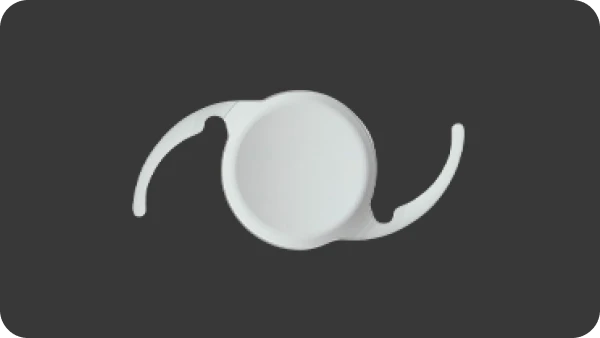
단초점·다초점·연속초점 등 생활 시야에 맞춰 결정합니다. -
Step
수술 후 관리
회복 상태와 시력 안정, 합병증 여부를 확인합니다.
백내장 수술 과정
백내장 수술은 혼탁해진 수정체를 제거하고,
환자 눈 상태와 생활 시야에 맞는 인공수정체를 삽입하는 수술입니다.
-
Step
정밀검진
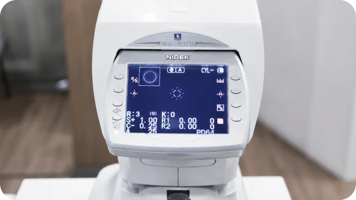
수정체·각막·망막 상태 정밀 검사와 진단 -
Step
혼탁 수정체 제거
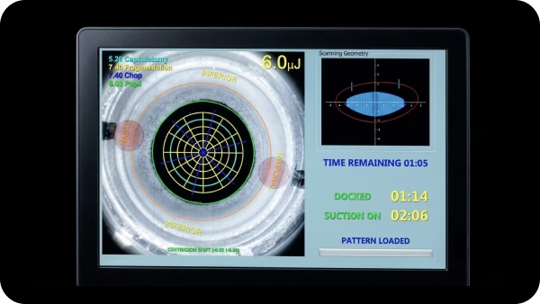
혼탁해진 수정체를 안전하게 제거 -
Step
인공수정체 삽입
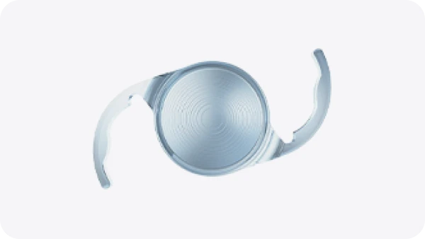
생활 시야와 눈 상태에 맞는 렌즈 선택 -
Step
수술 후 관리
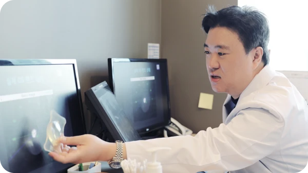
시력 회복과 염증, 안압, 렌즈 위치 확인
LENSAR®
백내장 시스템
LENSAR® 는 백내장 수술에서 각막 절개, 전낭 절개, 수정체 핵 분쇄 등의 과정을 레이저로
정교하게 보조하는 장비입니다. 환자의 눈 구조를 반영해 수술 계획을 세우는 데 활용되며,
수술의 정밀도를 높이는 데 도움을 줍니다.

-
 펨토초 레이저 기반 수술시간 단축,
펨토초 레이저 기반 수술시간 단축,
빠른 회복 지향 임상 연구 -
 전낭 절개 및 핵 분쇄 과정의
전낭 절개 및 핵 분쇄 과정의
정밀도
향상 임상 연구 -
 난시 교정을 고려한 수술
난시 교정을 고려한 수술
설계 가능
일반적인 백내장 수술
-
일반 백내장 수술
칼을 사용하여 각막을 절개하고 초음파로 수정체를 파쇄하여 제거하는 수술법입니다.
-

수정체 전낭절개 | 일반 백내장 수술
백내장을 제거하기 위한 사전 절차인, 전낭절개 역시 일반 백내장 수술의 경우 의사가 손으로 직접 진행합니다.
레이저를 이용한 백내장 수술
-
레이저를 이용한 백내장 수술
각막을 절개부터 수정체 파쇄까지 레이저로 진행하는 수술법입니다.
-

수정체 전낭절개 | 레이저 이용수술
백내장 수술 시 레이저가 수정체 전낭을 정교하게 절개합니다.
인공수정체 선택의 중요성
백내장 수술은 혼탁해진 수정체를 제거하고 인공수정체를 삽입하는 수술입니다. 이때 어떤 인공수정체를 선택하느냐에 따라 수술 후 주로 편한 거리, 안경 의존도, 야간 시야 만족도 등이 달라질 수 있습니다. 인공수정체는 크게 단초점, 다초점, 연속초점 계열로 나눌 수 있으며, 환자의 직업, 운전 여부, 독서·스마트폰 사용량, 망막 상태, 각막 상태, 난시 여부 등을 종합해 선택해야 합니다.
-
단초점 인공수정체
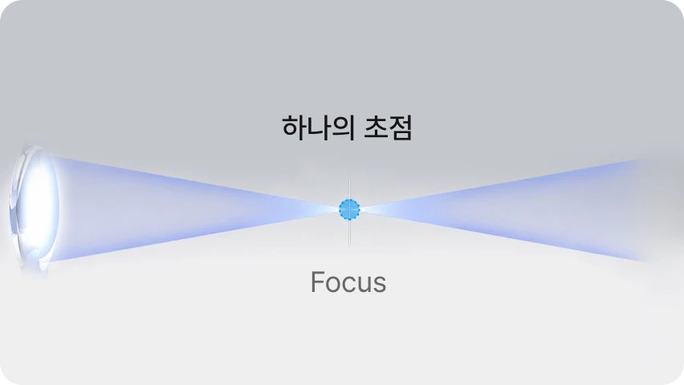
한 거리의 선명도에 집중하는 렌즈입니다. 원거리 중심으로 맞추는 경우 가까운 거리는 돋보기가 필요할 수 있습니다. -
다초점 인공수정체
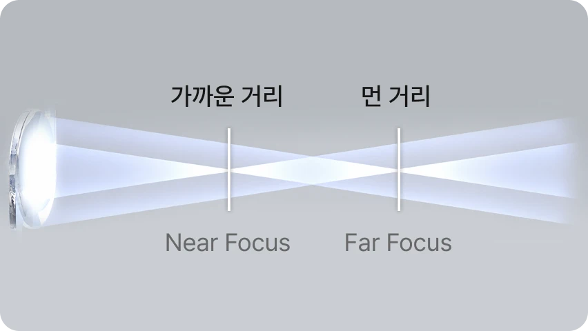
원거리와 근거리 등 여러 거리의 시야를 함께 고려해 안경 의존도를 낮추는 것을 목표로 합니다. -
연속초점 인공수정체
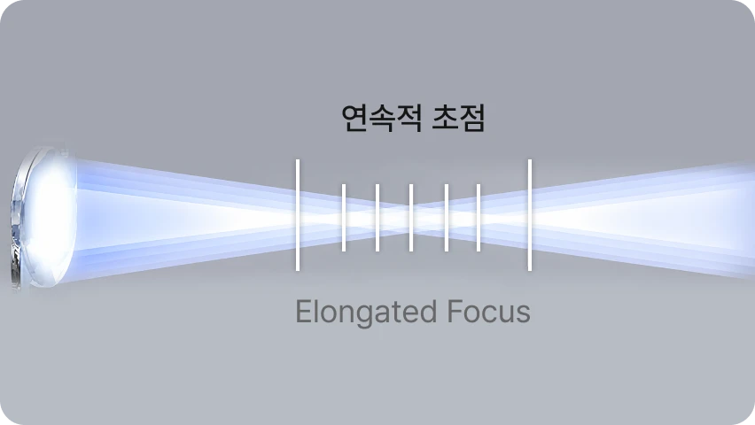
원거리부터 중간거리, 생활형 근거리까지 자연스러운 시야 연결을 고려하는 렌즈입니다.
아이리움안과가 엄선한 노안·백내장용 렌즈가 궁금하다면?
노안·백내장 렌즈 라인업 자세히 보기 →과거 라식·라섹 후 백내장 수술
과거 20여 년 전 라식·라섹을 받은 환자의 백내장 수술설계
당시 진단·수술 장비의 한계로 중심 이탈이나 좁은 광학부로 수술 받은 경우가 있고, 이런 각막은 다초점 또는 연속초점 인공수정체 선택에 영향을 줄 수 있습니다. 아이리움안과는 이런 경우 각막 상태를 확인하고, 필요한 경우 백내장 수술 전 각막 불규칙성을 고려해 환자 눈 상태와 요구에 맞는 방향을 상담하고 수술합니다.
-
Step
과거 라식·라섹
수술 이력 확인 -
Step
각막 및 안구 전체
웨이브프론트 분석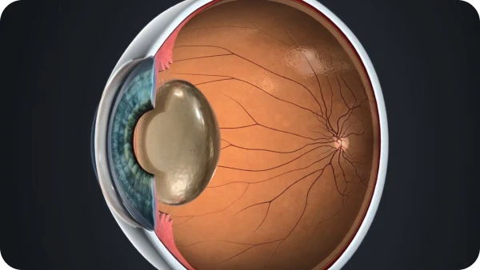
-
Step
인공수정체
적합성 판단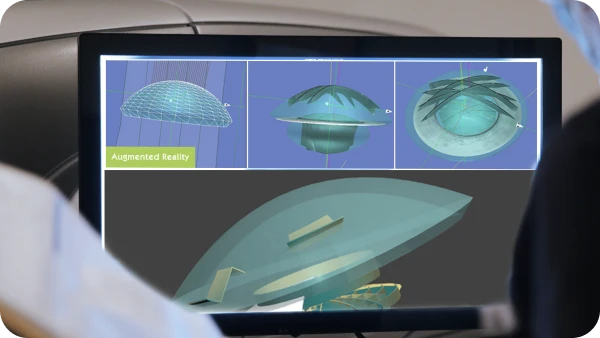
-
Step
필요 시 각막 치료
선행 후 백내장 수술
백내장 증상과 치료 FAQ
백내장 증상과 치료에 대해 가장 많이 묻는 질문
-
Q
백내장 수술은 언제 받아야 하나요?
-
Q
두 눈을 한꺼번에 수술하나요?
-
Q
나이가 많아도 백내장 수술이 가능한가요?
-
Q
인공수정체는 어떻게 선택하나요?
-
Q
과거 라식·라섹을 했어도 백내장 수술이 가능한가요?
-
Q
과거 라식·라섹을 했어도 백내장 수술이 가능한가요?